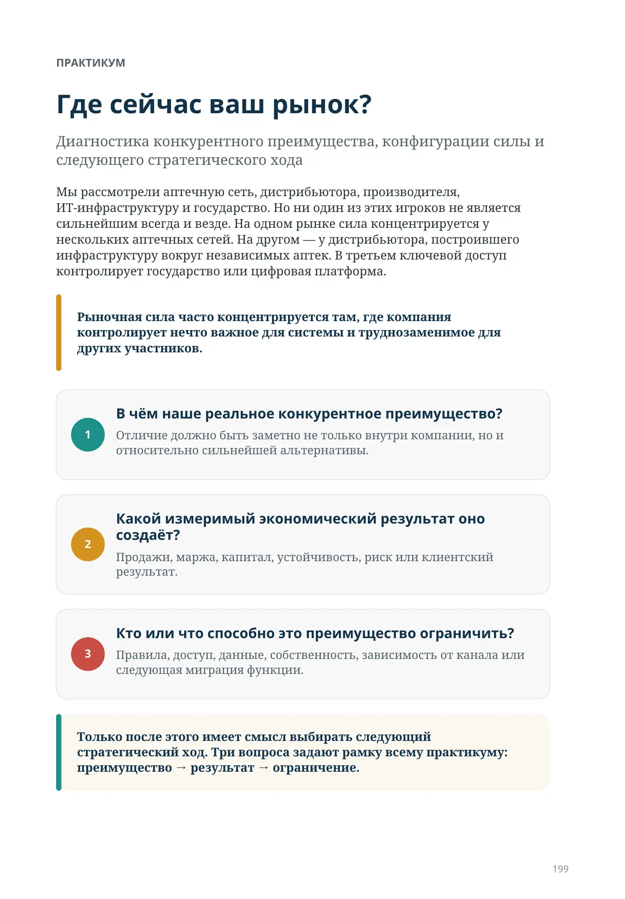
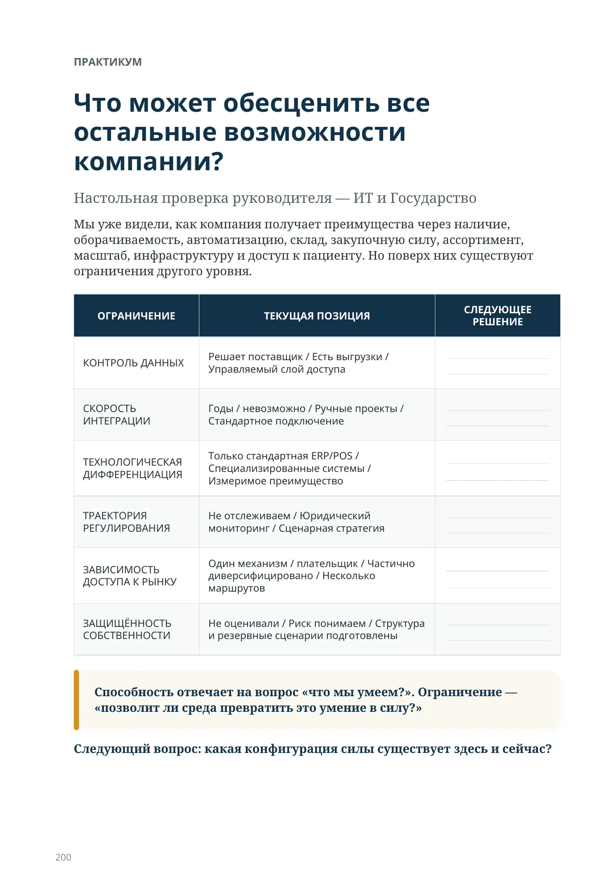
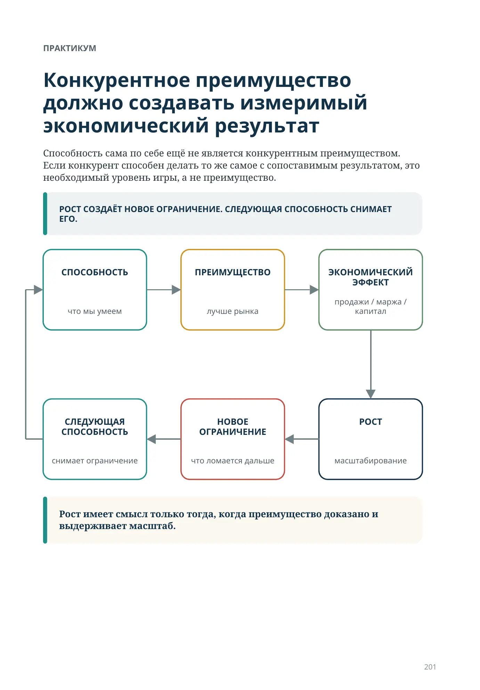
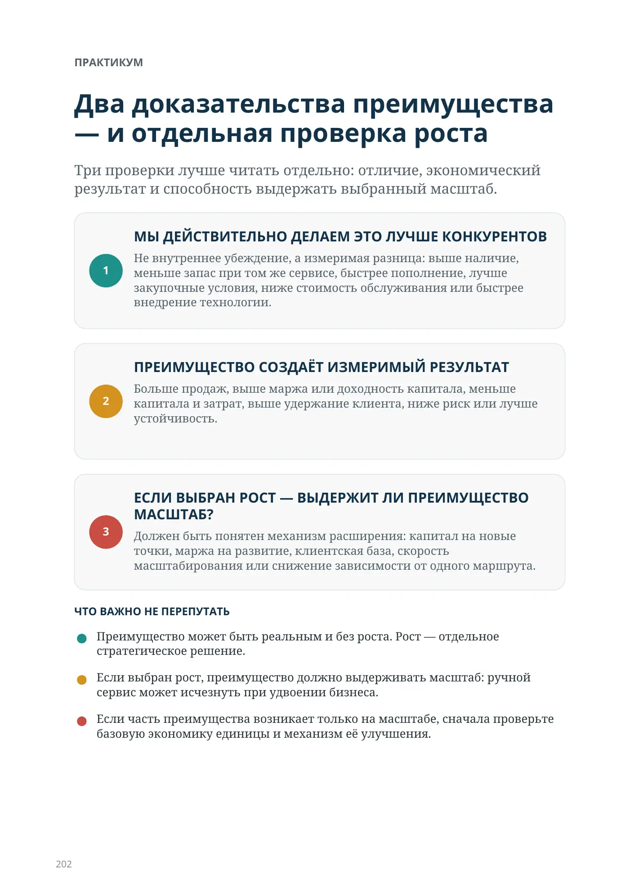
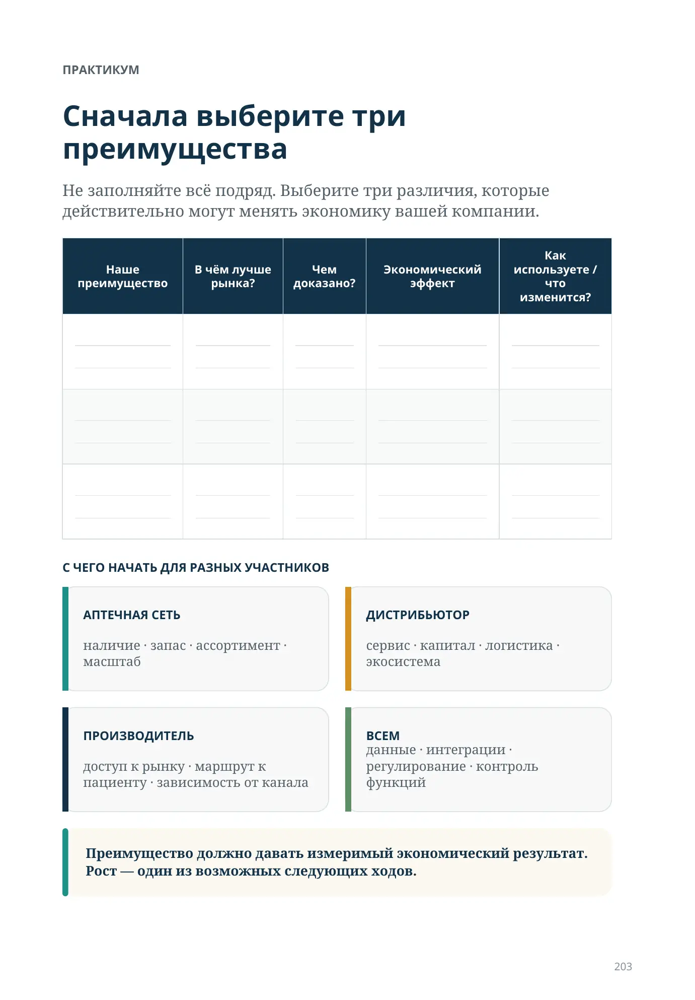
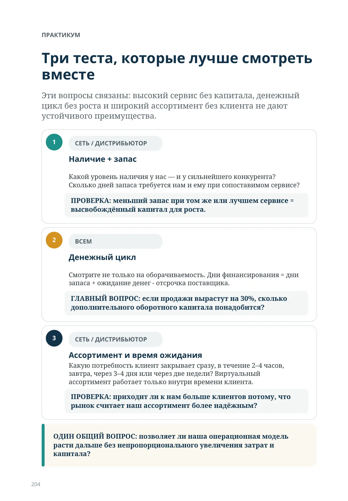
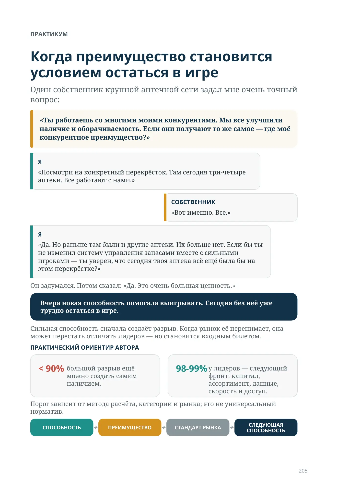
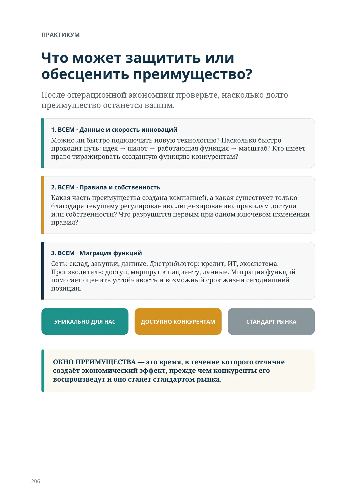
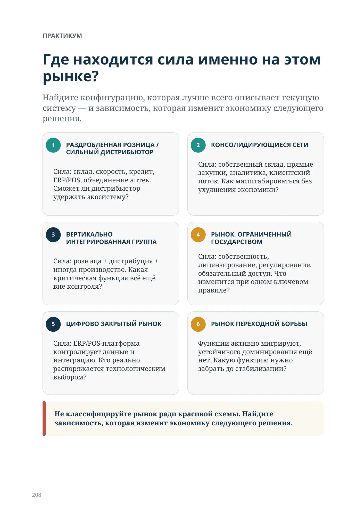
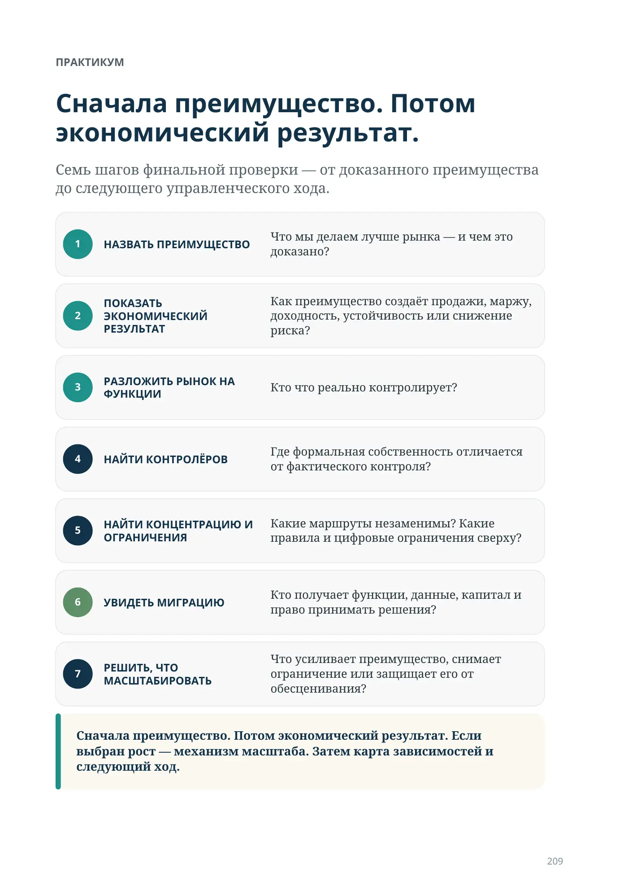

Где сейчас ваш рынок?
Диагностика конкурентного преимущества, конфигурации силы и следующего стратегического хода
Мы рассмотрели аптечную сеть, дистрибьютора, производителя, ИТ-инфраструктуру и государство. Но ни один из этих игроков не является сильнейшим всегда и везде. На одном рынке сила концентрируется у нескольких аптечных сетей. На другом — у дистрибьютора, построившего инфраструктуру вокруг независимых аптек. В третьем ключевой доступ контролирует государство или цифровая платформа.
Рыночная сила часто концентрируется там, где компания контролирует нечто важное для системы и труднозаменимое для других участников.
1. В чём наше реальное конкурентное преимущество? Отличие должно быть заметно не только внутри компании, но и относительно сильнейшей альтернативы.
2. Какой измеримый экономический результат оно создаёт? Продажи, маржа, капитал, устойчивость, риск или клиентский результат.
3. Кто или что способно это преимущество ограничить? Правила, доступ, данные, собственность, зависимость от канала или следующая миграция функции.
Только после этого имеет смысл выбирать следующий стратегический ход. Три вопроса задают рамку всему практикуму: преимущество → результат → ограничение.
Что может обесценить все остальные возможности компании?
Настольная проверка руководителя — ИТ и Государство
Мы уже видели, как компания получает преимущества через наличие, оборачиваемость, автоматизацию, склад, закупочную силу, ассортимент, масштаб, инфраструктуру и доступ к пациенту. Но поверх них существуют ограничения другого уровня.
| ОГРАНИЧЕНИЕ | ТЕКУЩАЯ ПОЗИЦИЯ | СЛЕДУЮЩЕЕ РЕШЕНИЕ |
|---|---|---|
| КОНТРОЛЬ ДАННЫХ | Решает поставщик / Есть выгрузки / Управляемый слой доступа | |
| СКОРОСТЬ ИНТЕГРАЦИИ | Годы / невозможно / Ручные проекты / Стандартное подключение | |
| ТЕХНОЛОГИЧЕСКАЯ ДИФФЕРЕНЦИАЦИЯ | Только стандартная ERP/POS / Специализированные системы / Измеримое преимущество | |
| ТРАЕКТОРИЯ РЕГУЛИРОВАНИЯ | Не отслеживаем / Юридический мониторинг / Сценарная стратегия | |
| ЗАВИСИМОСТЬ ДОСТУПА К РЫНКУ | Один механизм / плательщик / Частично диверсифицировано / Несколько маршрутов | |
| ЗАЩИЩЁННОСТЬ СОБСТВЕННОСТИ | Не оценивали / Риск понимаем / Структура и резервные сценарии подготовлены |
Способность отвечает на вопрос «что мы умеем?». Ограничение — «позволит ли среда превратить это умение в силу?»
Следующий вопрос: какая конфигурация силы существует здесь и сейчас?
Конкурентное преимущество должно создавать измеримый экономический результат
Рост имеет смысл только тогда, когда преимущество доказано и выдерживает масштаб.
Способность сама по себе ещё не является конкурентным преимуществом. Если конкурент способен делать то же самое с сопоставимым результатом, это необходимый уровень игры, а не преимущество.
что мы умеем
лучше рынка
продажи / маржа / капитал
снимает ограничение
что ломается дальше
масштабирование
Два доказательства преимущества — и отдельная проверка роста
Три проверки лучше читать отдельно: отличие, экономический результат и способность выдержать выбранный масштаб.
- МЫ ДЕЙСТВИТЕЛЬНО ДЕЛАЕМ ЭТО ЛУЧШЕ КОНКУРЕНТОВ. Не внутреннее убеждение, а измеримая разница: выше наличие, меньше запас при том же сервисе, быстрее пополнение, лучше закупочные условия, ниже стоимость обслуживания или быстрее внедрение технологии.
- ПРЕИМУЩЕСТВО СОЗДАЁТ ИЗМЕРИМЫЙ РЕЗУЛЬТАТ. Больше продаж, выше маржа или доходность капитала, меньше капитала и затрат, выше удержание клиента, ниже риск или лучше устойчивость.
- ЕСЛИ ВЫБРАН РОСТ — ВЫДЕРЖИТ ЛИ ПРЕИМУЩЕСТВО МАСШТАБ? Должен быть понятен механизм расширения: капитал на новые точки, маржа на развитие, клиентская база, скорость масштабирования или снижение зависимости от одного маршрута.
ЧТО ВАЖНО НЕ ПЕРЕПУТАТЬ
- Преимущество может быть реальным и без роста. Рост — отдельное стратегическое решение.
- Если выбран рост, преимущество должно выдерживать масштаб: ручной сервис может исчезнуть при удвоении бизнеса.
- Если часть преимущества возникает только на масштабе, сначала проверьте базовую экономику единицы и механизм её улучшения.
Сначала выберите три преимущества
Не заполняйте всё подряд. Выберите три различия, которые действительно могут менять экономику вашей компании.
Наше преимущество · В чём лучше рынка? · Чем доказано? · Экономический эффект · Как используете / что изменится?
| Наше преимущество | В чём лучше рынка? | Чем доказано? | Экономический эффект | Как используете / что изменится? |
|---|---|---|---|---|
С ЧЕГО НАЧАТЬ ДЛЯ РАЗНЫХ УЧАСТНИКОВ
АПТЕЧНАЯ СЕТЬ
наличие · запас · ассортимент · масштаб
ДИСТРИБЬЮТОР
сервис · капитал · логистика · экосистема
ПРОИЗВОДИТЕЛЬ
доступ к рынку · маршрут к пациенту · зависимость от канала
ВСЕМ
данные · интеграции · регулирование · контроль функций
Преимущество должно давать измеримый экономический результат. Рост — один из возможных следующих ходов.
Три теста, которые лучше смотреть вместе
Эти вопросы связаны: высокий сервис без капитала, денежный цикл без роста и широкий ассортимент без клиента не дают устойчивого преимущества.
-
СЕТЬ / ДИСТРИБЬЮТОР
Наличие + запасКакой уровень наличия у нас — и у сильнейшего конкурента? Сколько дней запаса требуется нам и ему при сопоставимом сервисе?
ПРОВЕРКА: меньший запас при том же или лучшем сервисе = высвобождённый капитал для роста.
-
ВСЕМ
Денежный циклСмотрите не только на оборачиваемость.
Дни финансирования = дни запаса + ожидание денег - отсрочка поставщика. ГЛАВНЫЙ ВОПРОС: если продажи вырастут на 30%, сколько дополнительного оборотного капитала понадобится?
-
СЕТЬ / ДИСТРИБЬЮТОР
Ассортимент и время ожиданияКакую потребность клиент закрывает сразу, в течение 2–4 часов, завтра, через 3–4 дня или через две недели? Виртуальный ассортимент работает только внутри времени клиента.
ПРОВЕРКА: приходит ли к нам больше клиентов потому, что рынок считает наш ассортимент более надёжным?
ОДИН ОБЩИЙ ВОПРОС: позволяет ли наша операционная модель расти дальше без непропорционального увеличения затрат и капитала?
Когда преимущество становится условием остаться в игре
Один собственник крупной аптечной сети задал мне очень точный вопрос:
«Ты работаешь со многими моими конкурентами. Мы все улучшили наличие и оборачиваемость. Если они получают то же самое — где моё конкурентное преимущество?»
Я
«Посмотри на конкретный перекрёсток. Там сегодня три-четыре аптеки. Все работают с нами.»
«Вот именно. Все.»
Я
«Да. Но раньше там были и другие аптеки. Их больше нет. Если бы ты не изменил систему управления запасами вместе с сильными игроками — ты уверен, что сегодня твоя аптека всё ещё была бы на этом перекрёстке?»
Он задумался. Потом сказал: «Да. Это очень большая ценность.»
Вчера новая способность помогала выигрывать. Сегодня без неё уже трудно остаться в игре.
Сильная способность сначала создаёт разрыв. Когда рынок её перенимает, она может перестать отличать лидеров — но становится входным билетом.
< 90% — большой разрыв ещё можно создать самим наличием.
98–99% у лидеров — следующий фронт: капитал, ассортимент, данные, скорость и доступ. Порог зависит от метода расчёта, категории и рынка; это не универсальный норматив.
СПОСОБНОСТЬ
- ПРЕИМУЩЕСТВО → СТАНДАРТ РЫНКА → СЛЕДУЮЩАЯ СПОСОБНОСТЬ
Что может защитить или обесценить преимущество?
После операционной экономики проверьте, насколько долго преимущество останется вашим.
- ВСЕМ · 1. Данные и скорость инноваций. Можно ли быстро подключить новую технологию? Насколько быстро проходит путь: идея → пилот → работающая функция → масштаб? Кто имеет право тиражировать созданную функцию конкурентам?
- ВСЕМ · 2. Правила и собственность. Какая часть преимущества создана компанией, а какая существует только благодаря текущему регулированию, лицензированию, правилам доступа или собственности? Что разрушится первым при одном ключевом изменении правил?
- ВСЕМ · 3. Миграция функций. Сеть: склад, закупки, данные. Дистрибьютор: кредит, ИТ, экосистема. Производитель: доступ, маршрут к пациенту, данные. Миграция функций помогает оценить устойчивость и возможный срок жизни сегодняшней позиции.
ОКНО ПРЕИМУЩЕСТВА — это время, в течение которого отличие создаёт экономический эффект, прежде чем конкуренты его воспроизведут и оно станет стандартом рынка.
Наш результат против сильнейшего конкурента
Заполняйте только строки, относящиеся к вашей модели. Здесь важна не абсолютная цифра, а разница с лучшей доступной альтернативой.
КОНТРОЛЬНАЯ ТОЧКА · МЫ · СИЛЬНЕЙШИЙ КОНКУРЕНТ / РЫНОК · РАЗНИЦА · ЭФФЕКТ / СЛЕДУЮЩИЙ ХОД. Строки: наличие / сервис; запас / оборачиваемость; денежный цикл; ассортимент / ожидание; скорость интеграций; зависимость от правил; функции приходят к нам; функции уходят от нас.
| Контрольная точка | Мы | Сильнейший конкурент / рынок | Разница | Эффект / следующий ход |
|---|---|---|---|---|
| Наличие / сервис | ||||
| Запас / оборачиваемость | ||||
| Денежный цикл | ||||
| Ассортимент / ожидание | ||||
| Скорость интеграций | ||||
| Зависимость от правил | ||||
| Функции приходят к нам | ||||
| Функции уходят от нас |
ПОСЛЕ СРАВНЕНИЯ: 1. Кто контролирует критическую функцию? 2. Кто способен её заблокировать? 3. Куда она мигрирует? 4. Какую следующую способность нужно построить? Улучшение по сравнению с собственным прошлым результатом ещё не доказывает конкурентного преимущества.
Область применения строк: наличие / сервис — СЕТЬ / ДИСТР.; запас / оборачиваемость — СЕТЬ / ДИСТР.; денежный цикл — ВСЕМ; ассортимент / ожидание — СЕТЬ / ДИСТР.; скорость интеграций — ВСЕМ; зависимость от правил — ВСЕМ; функции приходят к нам — ВСЕМ; функции уходят от нас — ВСЕМ.
Где находится сила именно на этом рынке?
Найдите конфигурацию, которая лучше всего описывает текущую систему — и зависимость, которая изменит экономику следующего решения.
- РАЗДРОБЛЕННАЯ РОЗНИЦА / СИЛЬНЫЙ ДИСТРИБЬЮТОР. Сила: склад, скорость, кредит, ERP/POS, объединение аптек. Сможет ли дистрибьютор удержать экосистему?
- КОНСОЛИДИРУЮЩИЕСЯ СЕТИ. Сила: собственный склад, прямые закупки, аналитика, клиентский поток. Как масштабироваться без ухудшения экономики?
- ВЕРТИКАЛЬНО ИНТЕГРИРОВАННАЯ ГРУППА. Сила: розница + дистрибуция + иногда производство. Какая критическая функция всё ещё вне контроля?
- РЫНОК, ОГРАНИЧЕННЫЙ ГОСУДАРСТВОМ. Сила: собственность, лицензирование, регулирование, обязательный доступ. Что изменится при одном ключевом правиле?
- ЦИФРОВО ЗАКРЫТЫЙ РЫНОК. Сила: ERP/POS-платформа контролирует данные и интеграцию. Кто реально распоряжается технологическим выбором?
- РЫНОК ПЕРЕХОДНОЙ БОРЬБЫ. Функции активно мигрируют, устойчивого доминирования ещё нет. Какую функцию нужно забрать до стабилизации?
Не классифицируйте рынок ради красивой схемы. Найдите зависимость, которая изменит экономику следующего решения.
Сначала преимущество. Потом экономический результат.
Семь шагов финальной проверки — от доказанного преимущества до следующего управленческого хода.
- НАЗВАТЬ ПРЕИМУЩЕСТВО. Что мы делаем лучше рынка — и чем это доказано?
- ПОКАЗАТЬ ЭКОНОМИЧЕСКИЙ РЕЗУЛЬТАТ. Как преимущество создаёт продажи, маржу, доходность, устойчивость или снижение риска?
- РАЗЛОЖИТЬ РЫНОК НА ФУНКЦИИ. Кто что реально контролирует?
- НАЙТИ КОНТРОЛЁРОВ. Где формальная собственность отличается от фактического контроля?
- НАЙТИ КОНЦЕНТРАЦИЮ И ОГРАНИЧЕНИЯ. Какие маршруты незаменимы? Какие правила и цифровые ограничения сверху?
- УВИДЕТЬ МИГРАЦИЮ. Кто получает функции, данные, капитал и право принимать решения?
- РЕШИТЬ, ЧТО МАСШТАБИРОВАТЬ. Что усиливает преимущество, снимает ограничение или защищает его от обесценивания?
Сначала преимущество. Потом экономический результат. Если выбран рост — механизм масштаба. Затем карта зависимостей и следующий ход.
Проверка физического потока товара
Если вы рассматриваете роботизацию, не начинайте с каталога оборудования. Возьмите одну конкретную аптеку или склад и ответьте на вопросы:
- Сколько дорогой площади сегодня используется только потому, что человек должен иметь быстрый физический доступ к запасу?
- Сколько рабочего времени уходит на поиск, ходьбу, приёмку, разбор, put-away и повторяющиеся перемещения?
- Какой уровень наличия мы имеем и сколько дней запаса требуется для него сегодня?
- Как изменилась бы требуемая ёмкость автоматизации при 60, 50, 40 и 30 днях запаса без ухудшения availability?
- Можно ли уменьшить этот запас более частым пополнением или центральным ассортиментом?
- Что мы сделаем с высвободившейся площадью и временем — в конкретных деньгах или пропускной способности?
- Какая доля входящего потока приходит от внешних поставщиков, а какая — из собственного распределительного центра, и какую часть контроля реально можно перенести выше по цепочке?
Если робот не снимает измеримое ограничение, технология ещё не стала конкурентным преимуществом.